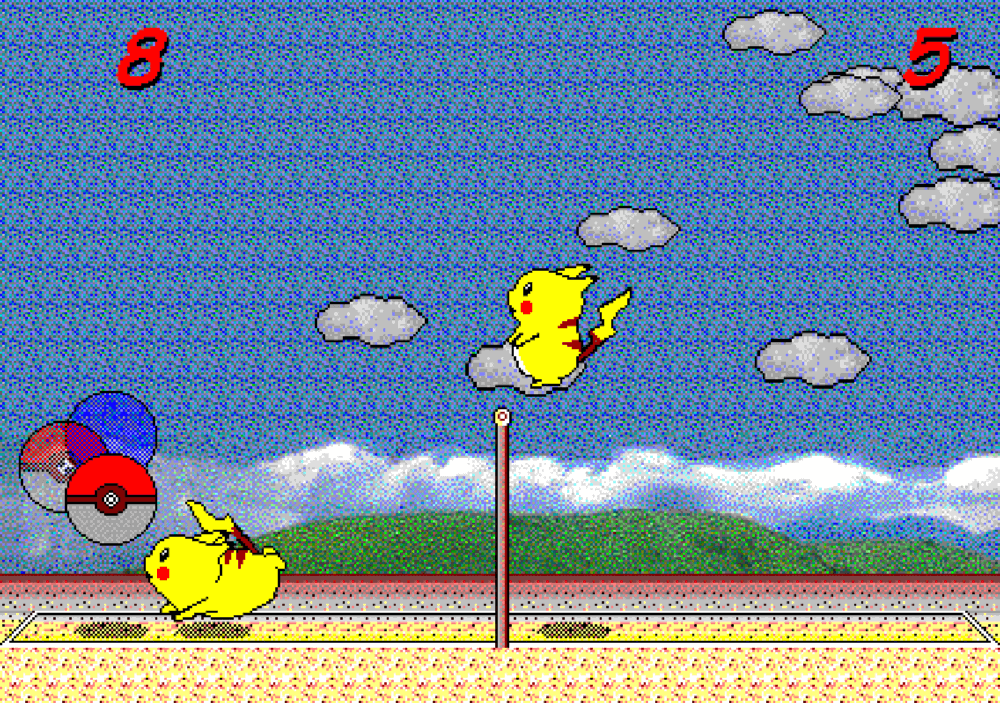
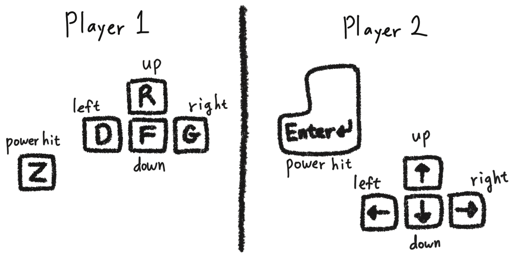

✓ Chinese (中文) | English | Korean (한국어)
這是皮卡丘打排球的2對2版本。
也可以遊玩2對2線上版（英文）。
也可以遊玩原始 P2P 線上版（英文）。
原版皮卡丘打排球（対戦ぴかちゅ～ ﾋﾞｰﾁﾊﾞﾚｰ編）由以下作者開發：
1997 (C) SACHI SOFT / SAWAYAKAN Programmers
1997 (C) Satoshi Takenouchi
原始遊戲經過逆向工程，
由以下作者實作為網頁版本：
Kyutae Lee
2對2版本改編者：
박세진, GPT-6.1 Sol
可在 GitHub 檢視原始碼。
釋出日期：2026-??-??

原版1對1遊戲畫面。
皮卡丘打排球是1997年於日本開發的 Windows 遊戲，曾在韓國相當流行，許多人都和朋友一起玩過。
原始網頁版透過逆向工程解析遊戲，再以 JavaScript 實作。遊戲直接在瀏覽器中執行，可在支援的作業系統上遊玩。
操作方式：
2位玩家＋2位電腦：按 Z 選擇左隊（P1＋P2），按 Enter 選擇右隊（P3＋P4）。第一位玩家使用 RDFGVZ，第二位玩家使用方向鍵／Enter。
1位玩家＋3位電腦：RDFGVZ 和方向鍵／Enter 皆可操作選定的球員。
R：跳躍，D：向左，G：向右，Z：擊球。預設 F 為朝球網方向的斜下方，V 為向下。可在設定中改為 F 向下、V 停用，並儲存此偏好。
在「1位玩家＋3位電腦」中，按 Z（P1）、V（P2）、逗號（P3）或 Enter（P4）選擇位置。
4位玩家的2對2操作（實體按鍵，不需按 Shift）
| 球員 | 跳躍 | 向左 | 右下方 | 向右 | 向下 | 擊球 |
|---|---|---|---|---|---|---|
| P1 | W | A | S | D | X | Z |
| P2 | Y | G | H | J | B | V |
| P3 | P | L | — | " | ; | , |
| P4 | ↑ | ← | — | → | ↓ | Enter |
P1＋P2 為左隊，P3＋P4 為右隊。使用跳躍／向下鍵選擇模式，擊球鍵確認。
原版1對1的操作與提示

使用相容的藍牙鍵盤，也可以在觸控／行動裝置上遊玩。
提示1：
與原始遊戲相同，在原版1對1模式中選擇"1人でぴかちゅ~"與電腦對戰時，按 Z 確認可操作左方球員，按 Enter 確認可操作右方球員。
提示2：
在原版1對1中，左方玩家也可以使用 V 作為向下鍵。V 與 F 的作用不同，可以自行試試。（感謝 @repeat_c 的回報，讓原作的這項特性得以在網頁版呈現。）
提示3：
按 Esc 可隱藏或顯示遊戲選單列。
提示4：
本網頁版加入了原作沒有的練習模式，可在以下選單開啟：「設定 → 練習模式 → 開啟」。
提示5：
如需離線遊玩，可將此網頁安裝為應用程式。在電腦上可參考使用 Chrome 安裝網頁應用程式。在行動裝置上，可將此頁面「加入主畫面」。